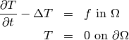
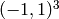
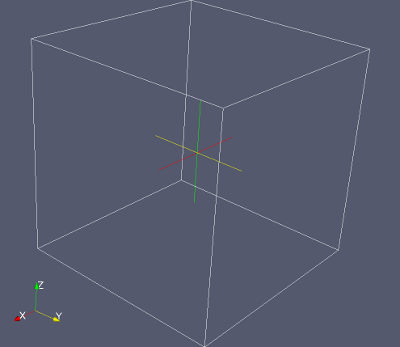
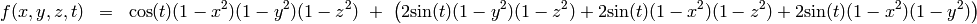
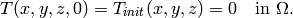
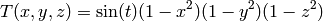
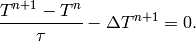
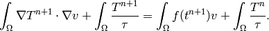
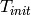
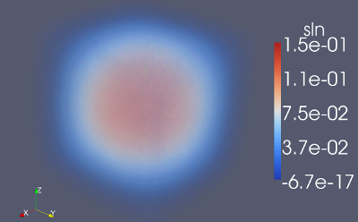

Heat Conduction¶
Git reference: Examples heat conduction.
This example describes the implementation of a simple time-dependent heat conduction problem inside the domain.
The standard heat transfer PDE solved:
(1)
Domain of interest: Unit cube :
Right-hand side (load function):
(2)
Equation (1) is also equipped with an initial condition of the form:
(3)
Exact solution is:
(4)
For simplicity we will use the implicit Euler method with a constant time step  ,
which transforms equation (1) into:
,
which transforms equation (1) into:
(5)
The corresponding weak formulation is:
(6)
Code for the exact solution and the weak forms:
double fn(double x, double y, double z)
{
return sin(TIME) * (1 - x*x) * (1 - y*y) * (1 - z*z);
}
double fndd(double x, double y, double z, double &dx, double &dy, double &dz)
{
dx = -2 * sin(TIME) * x * (1 - y*y) * (1 - z*z);
dy = -2 * sin(TIME) * (1 - x*x) * y * (1 - z*z);
dz = -2 * sin(TIME) * (1 - x*x) * (1 - y*y) * z;
return fn(x, y, z);
}
// Boundary condition types.
BCType bc_types(int marker) {
return BC_ESSENTIAL;
}
template<typename real, typename scalar>
scalar bilinear_form(int n, double *wt, fn_t<scalar> *u_ext[], fn_t<real> *u, fn_t<real> *v, geom_t<real> *e, user_data_t<scalar> *data)
{
return int_grad_u_grad_v<real, scalar>(n, wt, u, v, e) + int_u_v<real, scalar>(n, wt, u, v, e) / TAU;
}
template<typename real> real rhs(real x, real y, real z)
{
real ddxx = -2 * sin(TIME) * (1 - y*y) * (1 - z*z);
real ddyy = -2 * sin(TIME) * (1 - x*x) * (1 - z*z);
real ddzz = -2 * sin(TIME) * (1 - x*x) * (1 - y*y);
real dt = cos(TIME) * (1 - x*x) * (1 - y*y) * (1 - z*z);
return dt - (ddxx + ddyy + ddzz);
}
template<typename real, typename scalar>
scalar linear_form(int n, double *wt, fn_t<scalar> *u_ext[], fn_t<real> *v, geom_t<real> *e, user_data_t<scalar> *data)
{
return int_F_v<real, scalar>(n, wt, rhs, v, e) + int_u_v<real, scalar>(n, wt, data->ext + 0, v, e) / TAU;
}
Before entering the main iteration loop, we need to initialize the previous solution sln_prev with the initial condition  The solution class can be forced to return zero, to return a constant, or to return an arbitrary function using the methods set_zero(), set_const() and set_exact(), repectively. In this example, we initilize the temperature as all zero:
// Construct initial solution and set zero.
Solution sln_prev(&mesh);
sln_prev.set_zero();
Next, the weak forms above are registered as following:
// Initialize the weak formulation.
WeakForm wf;
wf.add_matrix_form(bilinear_form<double, scalar>, bilinear_form<ord_t, ord_t>, SYM);
wf.add_vector_form(linear_form<double, scalar>, linear_form<ord_t, ord_t>, ANY, &sln_prev);
Since the Stiffness matrix does not dependend on the solution, so assembling only need to be done once in the first time step. For all remaining time step it will be the same, and we just need to re-construct the the load vector. The code needed to be implemented.
Solution graph:
See also